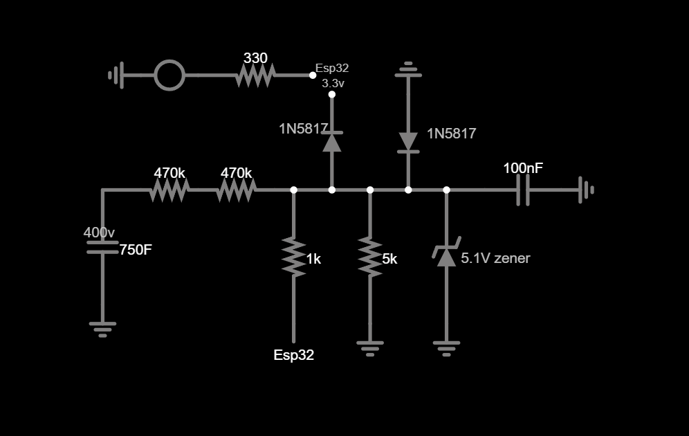
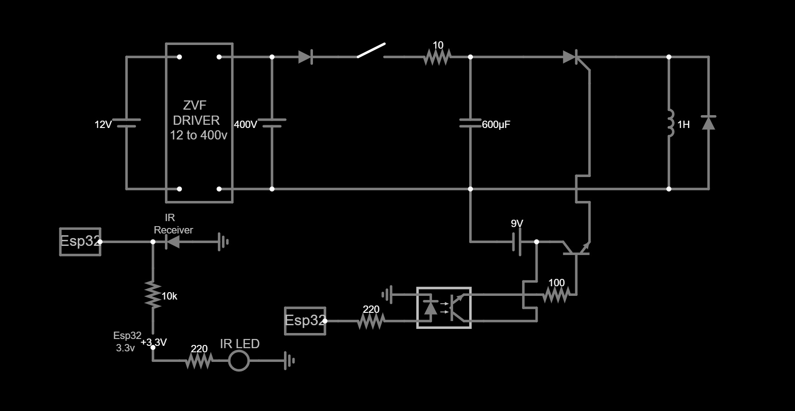

Magnetic Coil Launcher (Coil Gun)
An ongoing multi-stage electromagnetic acceleration project using an ESP32 microcontroller, high-voltage energy storage, custom switching hardware, and optical velocity measurement. This page documents the development process and experimental results as the project progresses.
Core Technical Specs
- Control Unit: ESP32 microcontroller with hardware interrupt based telemetry
- Energy System: High-voltage capacitor based pulse system
- Switching: High-current thyristor based switching during the current test configuration
- Telemetry: Dual infrared optical velocity measurement system
- Project Status: Stage 2 testing has identified a significant efficiency problem requiring further investigation
Development Log Updates
ESP32 Timing and Optical Telemetry Framework
The first major software milestone was establishing the ESP32 timing framework used throughout the later experiments. The controller was configured to work with optical sensors and microsecond-level timing measurements.
The optical chronograph determines projectile velocity by measuring the amount of time that a projectile blocks an infrared beam. The measured interval can then be compared against the known projectile length to determine velocity.
// --- TIME-CRITICAL CONTROL FRAMEWORK ---
// Optical sensor events are captured using hardware interrupts.
//
// The resulting timestamps are used by the telemetry
// system to calculate projectile velocity.
//
// Stage sequencing is handled independently from
// the optical measurement routines.Hardware Architecture and Voltage Monitoring
After establishing the firmware measurement framework, I documented the hardware architecture used by the experimental platform. The design separates the ESP32 control electronics from the higher-energy portions of the system.
A voltage monitoring circuit was also developed so that the controller could observe the state of the energy storage system without directly exposing the ESP32 to the high-voltage rail.
The optical telemetry system was integrated into the same control architecture so that velocity measurements could be collected during later single-stage and multi-stage experiments.

Analog voltage monitoring interface used to scale the measured voltage for the control electronics.
System-level schematic showing the control, switching, and optical measurement portions of the experimental platform.Stage 1 Velocity and Voltage Characterization
Before beginning the multi-stage experiments, I established a single-stage baseline. This was important because the second stage could not be evaluated properly without first knowing how the first stage performed on its own.
The voltage sweep was performed using a 35 mm projectile with the projectile positioned at the same nominal starting distance for comparison between trials.
Stage 1 Voltage Sweep
- 400 V: 21.30 m/s average velocity
- 350 V: 19.67 m/s average velocity
- 300 V: 16.73 m/s average velocity
- 250 V: 14.38 m/s average velocity
- 200 V: 10.92 m/s average velocity
- 150 V: 6.76 m/s average velocity
- 100 V: 3.52 m/s average velocity
- 50 V: 0.00 m/s recorded velocity
- 0 V: 0.00 m/s recorded velocity
The highest measured Stage 1 average velocity in this dataset was 21.30 m/s at 400 V. The results provided the baseline used for the subsequent Stage 2 experiments.
Starting Distance Sweep
- 35 mm projectile: Best recorded average velocity in the distance sweep was 21.30 m/s.
- 40 mm projectile: Best recorded average velocity in the distance sweep was 16.92 m/s.
- 35 mm projectile mass: 9.57 g
- 40 mm projectile mass: 10.94 g
Stage 2 Multi-Stage Timing Tests
After establishing the Stage 1 baseline, I began testing the second stage. The objective was to determine whether adding the second acceleration stage produced a measurable increase in final velocity.
The initial results were unexpected. Across the tested timing configurations, enabling the second stage consistently resulted in a lower measured exit velocity than the corresponding Stage 1 baseline.
300 V Stage 2 Timing Results
- 500 µs: Stage 1 16.91 m/s, Stage 2 14.64 m/s, Difference -2.27 m/s
- 750 µs: Stage 1 21.29 m/s, Stage 2 18.19 m/s, Difference -3.10 m/s
- 1000 µs: Stage 1 23.16 m/s, Stage 2 20.56 m/s, Difference -2.60 m/s
- 1250 µs: Stage 1 24.12 m/s, Stage 2 21.77 m/s, Difference -2.35 m/s
- 1500 µs: Stage 1 23.57 m/s, Stage 2 21.64 m/s, Difference -1.93 m/s
- 1750 µs: Stage 1 23.70 m/s, Stage 2 21.43 m/s, Difference -2.27 m/s
- 2000 µs: Stage 1 24.50 m/s, Stage 2 21.97 m/s, Difference -2.53 m/s
- 2250 µs: Stage 1 23.56 m/s, Stage 2 22.17 m/s, Difference -1.39 m/s
- 2500 µs: Stage 1 24.04 m/s, Stage 2 21.48 m/s, Difference -2.56 m/s
- 2750 µs: Stage 1 23.84 m/s, Stage 2 21.23 m/s, Difference -2.61 m/s
- 3000 µs: Stage 1 24.40 m/s, Stage 2 21.70 m/s, Difference -2.70 m/s
The results show that the Stage 2 configuration did not produce a positive net velocity gain in this test series. The measured differences remained negative throughout the tested timing range.
200 V Stage 2 Timing Results
- 500 µs: Stage 1 11.06 m/s, Stage 2 9.91 m/s, Difference -1.15 m/s
- 750 µs: Stage 1 13.99 m/s, Stage 2 11.74 m/s, Difference -2.25 m/s
- 1000 µs: Stage 1 16.48 m/s, Stage 2 14.32 m/s, Difference -2.16 m/s
- 1250 µs: Stage 1 17.59 m/s, Stage 2 15.04 m/s, Difference -2.55 m/s
- 1500 µs: Stage 1 17.51 m/s, Stage 2 15.35 m/s, Difference -2.16 m/s
- 1750 µs: Stage 1 17.79 m/s, Stage 2 16.30 m/s, Difference -1.49 m/s
- 2000 µs: Stage 1 17.59 m/s, Stage 2 16.07 m/s, Difference -1.52 m/s
- 2250 µs: Stage 1 17.91 m/s, Stage 2 16.22 m/s, Difference -1.69 m/s
A reduced-capacitance configuration was also tested. The recorded results showed a smaller negative velocity difference in several timing trials compared with the larger-capacitance configuration. This became an important observation for the ongoing investigation, although the second stage still did not provide a positive net gain.
Reduced Stage 2 Capacitance Results
- 500 µs: Stage 1 14.07 m/s, Stage 2 12.87 m/s, Difference -1.20 m/s
- 750 µs: Stage 1 17.88 m/s, Stage 2 16.20 m/s, Difference -1.68 m/s
- 1000 µs: Stage 1 19.19 m/s, Stage 2 17.06 m/s, Difference -2.13 m/s
- 1250 µs: Stage 1 19.67 m/s, Stage 2 17.60 m/s, Difference -2.07 m/s
- 1500 µs: Stage 1 19.10 m/s, Stage 2 17.58 m/s, Difference -1.52 m/s
- 1750 µs: Stage 1 18.23 m/s, Stage 2 16.25 m/s, Difference -1.98 m/s
- 2000 µs: Stage 1 18.91 m/s, Stage 2 17.06 m/s, Difference -1.85 m/s
- 2250 µs: Stage 1 18.22 m/s, Stage 2 16.81 m/s, Difference -1.41 m/s
- 2500 µs: Stage 1 18.89 m/s, Stage 2 17.55 m/s, Difference -1.34 m/s
The current working hypothesis is that the second stage remains electrically active for longer than the ideal acceleration window. The observed behavior is consistent with the projectile experiencing magnetic braking as it passes through the second coil. Further hardware investigation is required before the second stage can be considered successful.
Additional Stage 2 Timing Experiments
Additional experiments were recorded using both time-sequenced and position-triggered test configurations. These trials further confirmed that the second stage was not producing a positive net velocity increase in the tested configurations.
Additional Recorded Results
- Time-sequenced tests: Multiple timing configurations produced negative measured velocity differences.
- Position-triggered tests: Recorded results also remained below the corresponding Stage 1 velocity.
- Overall observation: The Stage 2 problem was present across more than one timing approach.
These results shifted the investigation away from treating the issue as a single incorrect timing value. The current development focus is instead on understanding the switching behavior, magnetic field decay, and the interaction between the second stage and projectile motion.
Stage 2 Efficiency Investigation
The project is currently in the troubleshooting stage. Stage 1 has produced a repeatable baseline across multiple voltage and position tests, while the current Stage 2 configuration has consistently produced a negative net velocity difference.
The next development phase will focus on understanding the electrical switching characteristics and the relationship between current decay, magnetic field behavior, and projectile position. Hardware changes are being considered as part of the ongoing research.
This page will continue to be updated as new measurements, hardware revisions, and experimental observations are recorded. Completed portions of the project will eventually be moved into formal portfolio or blog documentation.